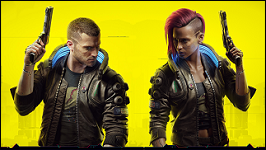
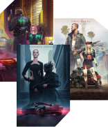
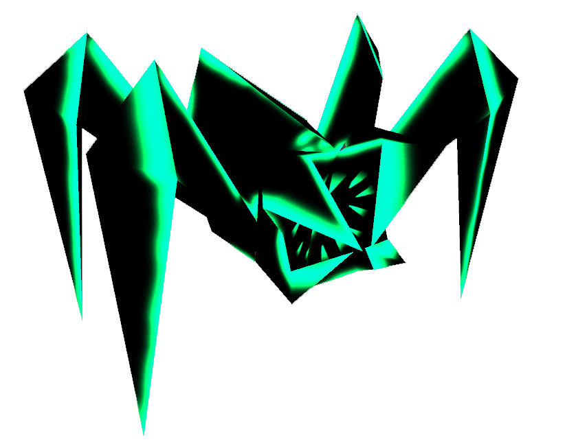

V, an alias for Vincent/Valerie (gender-dependent), is the player-controlled protagonist of the video game. V's gender, appearance, attributes, perks, and lifepath are all customizable and have an impact on the story.
Throughout your adventure, you will meet multiple partners who can, because of your choices, become your most precious allies or formidable enemies...
Fixers are the well-connected fencers, smugglers, and information brokers who apply their trade on the black market. As they are so well-connected to comings and going on the streets, they can locate, acquire and know about a desired person, place or thing within their area of operation.
By day, the Street is the province of Corporate movers and commuting Beavers. But at night, the predators slither out from under their rocks and trash heaps, and the City howls.
Change V :
Select V's Life-Path :
V (You)
This part of Cyberpunk 2077 is a deep character customization system.
The process starts with the player either selecting a preset character or creating a custom character.
When creating a custom character, the player can select a gender and customize their character.
Options also include picking between a male or female sounding voice, while also adjusting the pitch.


Change V :
V (You)
This part of Cyberpunk 2077 is a deep character customization system.
The process starts with the player either selecting a preset character or creating a custom character.
When creating a custom character, the player can select a gender and customize their character.
Options also include picking between a male or female sounding voice, while also adjusting the pitch.
Partners
Here are some of the people who will be central to the main plot in one way or another.
Some may become allies and remain allies, but it is also possible to make enemies based on circumstances and your choices.
Some people have reached the top in their field, they usually have immense influence, a great fortune, and/or large implants and guns.
They should not be taken lightly...
Fixers
Are you a Fixer ? :
You realized fast that you weren't ever going to get into a Corporate job ?
And you didn't think your were tough enough or crazy enough to be a Solo either ?
But as a small time punk, you knew you had a knack for figuring out whatpeople wanted, and how to get it for them ?
For a price, of course...
So yeah, you’re what we can call a fixer
Gangs
Call them gutterats, night crawlers, trash or streetscum, the gangs are the ultimate rulers of the city's night.
Whether it's a small pack of a dozen, or an army of two hundred, each gang in Night City is as diverse as the Street itself.
Guardians, chromers, dorphers and freaks, all thrown together in a lethal cocktail, mixed and sprinkled liberally with blood.